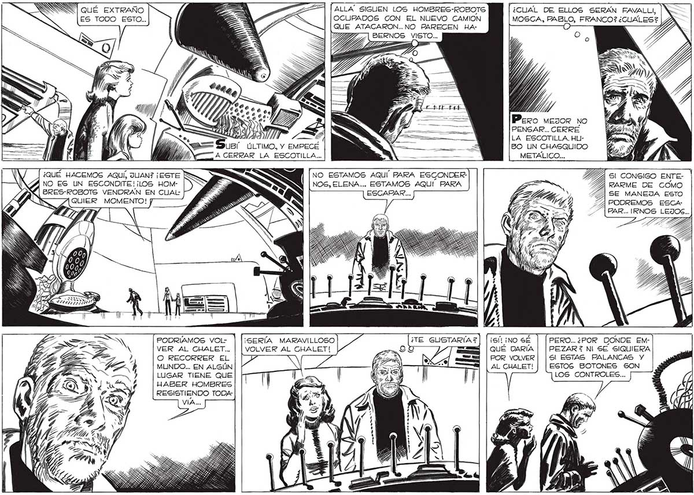

354 <= qué EXTRAÑO = e ALLA" SIGUEN LOS HOMBRES-ROBOTS ES TOGO ESTO. z OCUPADOS CON EL NUEVO CAMION , QUE ATACARON... NO PARECEN HA, BERNOS pea ¿CUAL DE ELLOS SERAN FAVALLI, | WN MOSCA, PAS FRANCO? ¿CUALES? Pero mesor no PENSAR.. CERRE LA ESCOTILLA. HUBO UN CHASQUIDO METÁLICO... y UBÍ ÚLTIMO, Y EMPECÉ Y, A CERRAR LA ESCOTILLA... ¿QUÉ HACEMOS AQUÍ, JUAN? ¡EsTE RS [NO ESTAMOS AQUÍ PARA ESGONDER- , Sl CONSIGO ENTENO ES UN ESCONDITE! ¡LOS HOM- y Y= NOS, ELENA... ESTAMOS AQUÍ. PARA SA RKARME DE COMO ¿| BRES-ROBOTS VENDRAN EN CUAL: y ESCAPAR... ZA SE MANEJA ESTO S S ; Y NE pd MOMENTO! p 4 PODREMOS ESCAY rl 7/4 7 PAR... I¡RNOS LEJOS... PODRÍAMOS VOL- ¡SERÍA MARAVILLOSO ¡Sí ¡NO SÉ PERO... ¿POR DONDE EMVER AL CHALET... | | vOLVER AL CHALET! QUÉ DARÍA | | PEZARZ NI SE SIQUIERA O RECORRER EL PA POR VOLVER | | Sl ESTAS PALANCAS Y MUNDO... EN ALGÚN LUGAR TIENE QUE HABER HOMBRES RESISTIENDO TODAAL CHALET! ESTOS BOTONES SON LOS CONTROLES...
